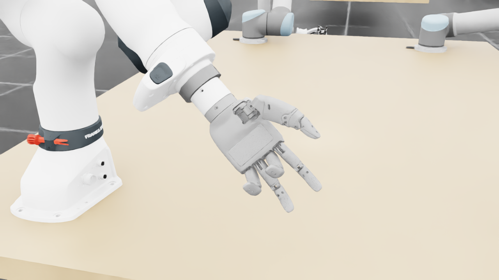
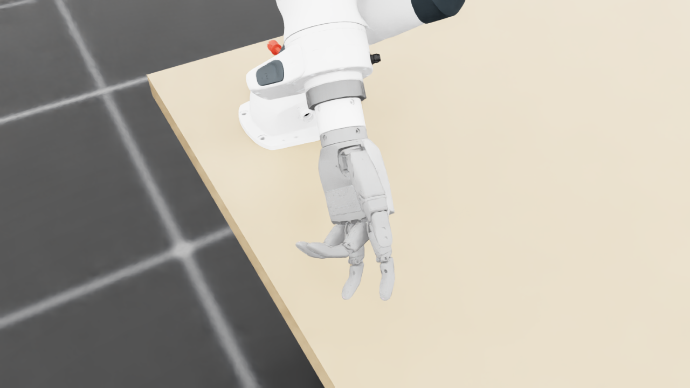
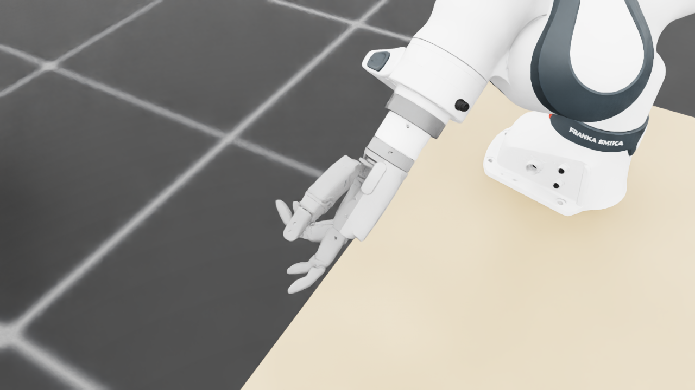
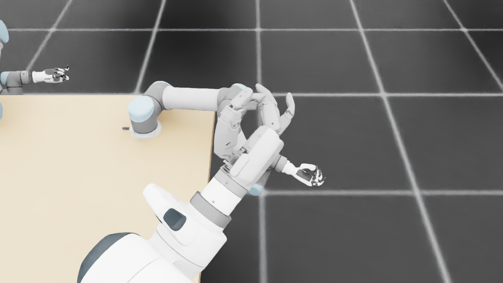
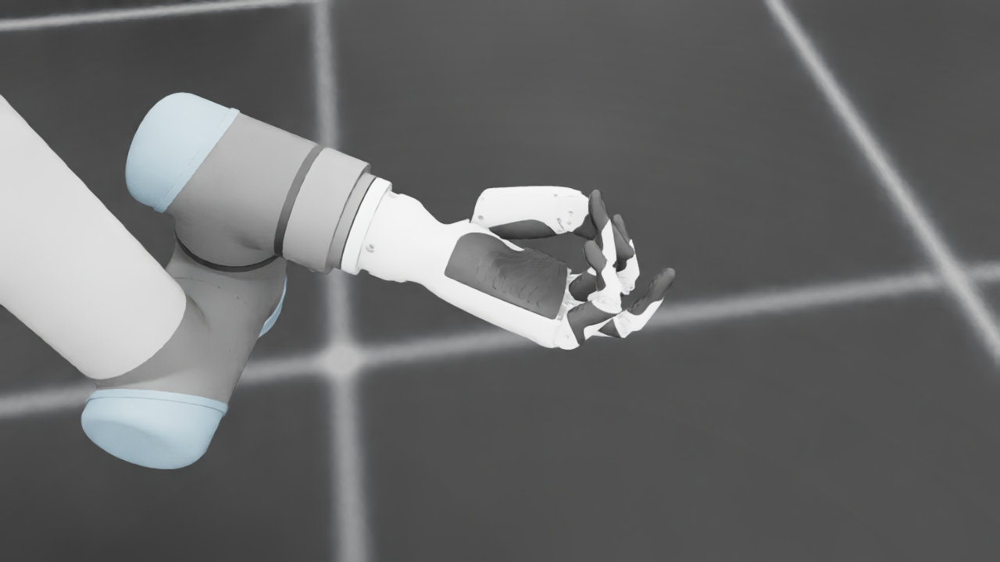
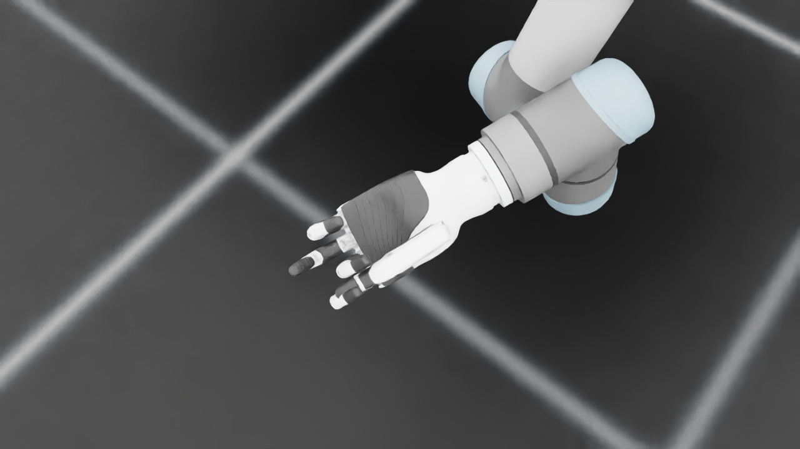
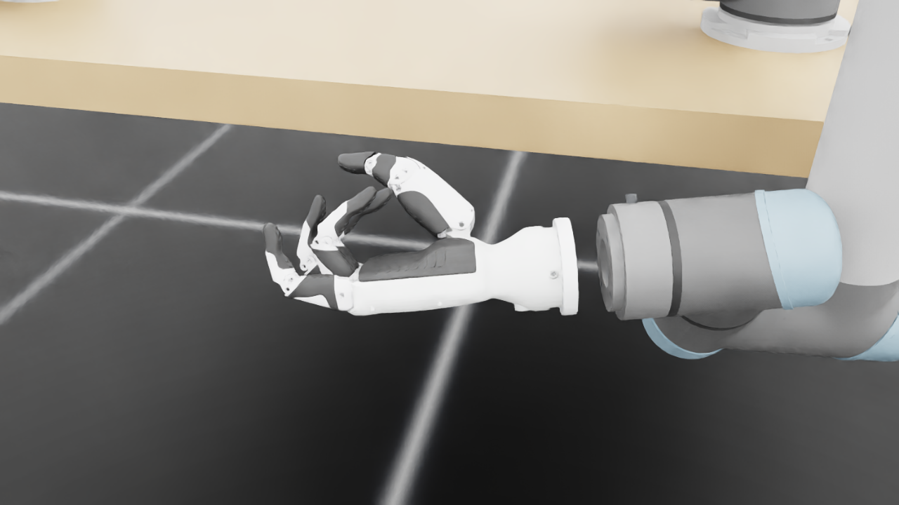
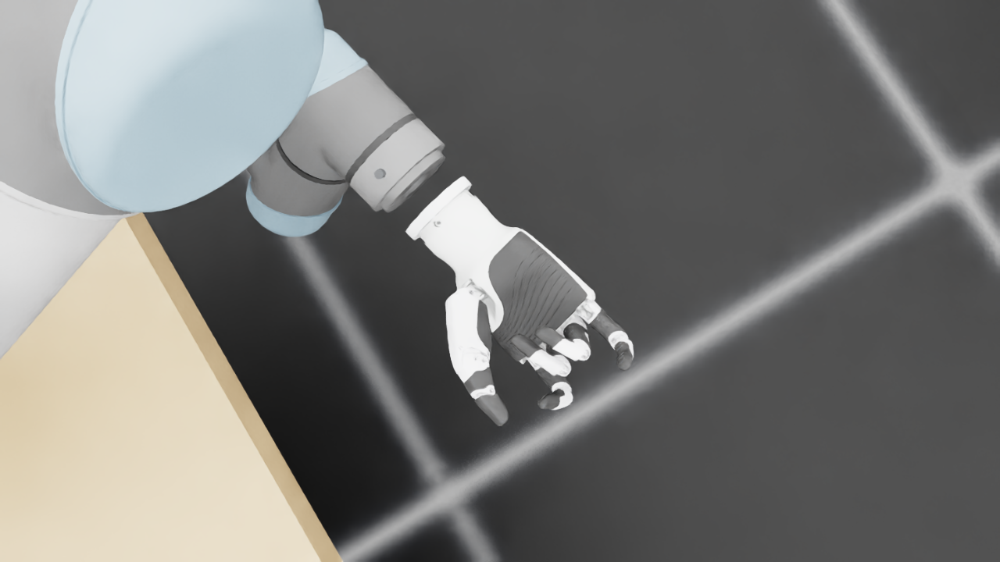
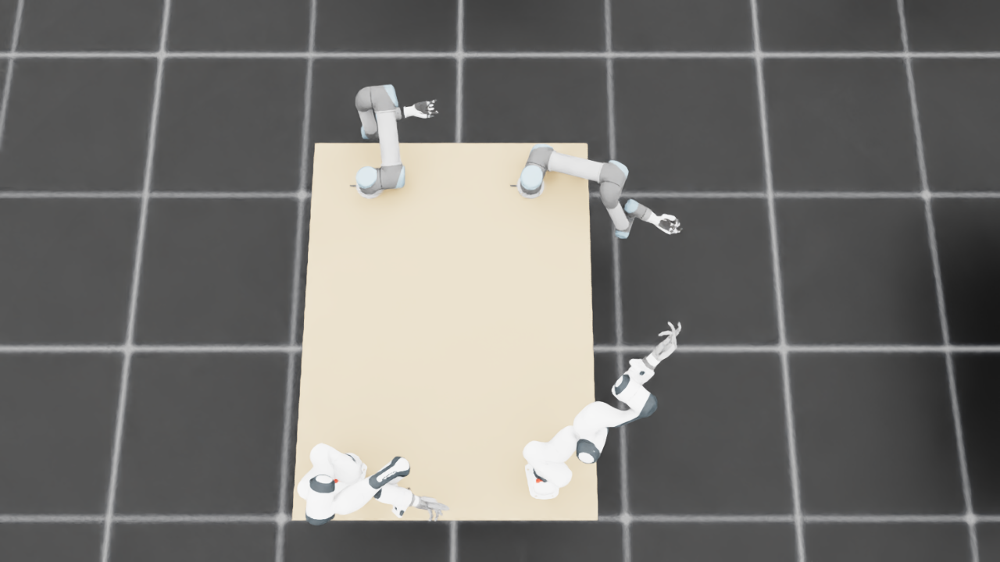
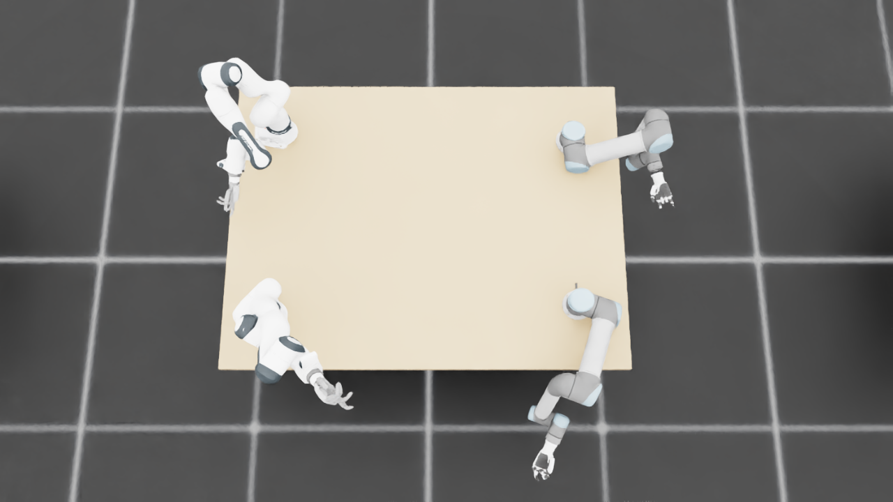

规定初始像素覆盖已通过独立数据验收，完整12步与物理安全未通过。Prescribed initial pixel coverage passes the independent DATA audit; full12-step and physical acceptance remain incomplete. Original1280×720; no edits/crop. Every image below is INITIAL, not micro1/final.
{"seed": 0, "proposal_id": 2162, "global_id": 8306, "family": 2}









{
"qualified": true,
"arms": {
"F_L": {
"qualified": true,
"palm_visual_peak_pixels": 18128,
"finger_family_peak_pixels": {
"thumb": 9381,
"index": 4053,
"middle": 3416,
"ring": 3537,
"little": 2504
},
"per_native_body_peak_pixels": {
"/World/envs/env_5/F_L/f2_hand/left_hand_base": 29432,
"/World/envs/env_5/F_L/f2_hand/left_index_1": 2511,
"/World/envs/env_5/F_L/f2_hand/left_middle_1": 1682,
"/World/envs/env_5/F_L/f2_hand/left_pinky_1": 1307,
"/World/envs/env_5/F_L/f2_hand/left_ring_1": 1589,
"/World/envs/env_5/F_L/f2_hand/left_thumb_1": 581,
"/World/envs/env_5/F_L/f2_hand/left_index_2": 2025,
"/World/envs/env_5/F_L/f2_hand/left_middle_2": 1734,
"/World/envs/env_5/F_L/f2_hand/left_pinky_2": 1197,
"/World/envs/env_5/F_L/f2_hand/left_ring_2": 1948,
"/World/envs/env_5/F_L/f2_hand/left_thumb_2": 5118,
"/World/envs/env_5/F_L/f2_hand/left_thumb_3": 1890,
"/World/envs/env_5/F_L/f2_hand/left_thumb_4": 2068
},
"native_body_visibility_gaps": [],
"all_native_hand_bodies_observed": true,
"full_mesh_coverage_certified": false,
"all_recorded_attempt_peak": {
"qualified": false,
"palm_visual_peak_pixels": 30643,
"finger_family_peak_pixels": {
"thumb": 10323,
"index": 5791,
"middle": 3416,
"ring": 4407,
"little": 4506
},
"per_native_body_peak_pixels": {
"/World/envs/env_5/F_L/f2_hand/left_hand_base": 36984,
"/World/envs/env_5/F_L/f2_hand/left_index_1": 3346,
"/World/envs/env_5/F_L/f2_hand/left_middle_1": 1761,
"/World/envs/env_5/F_L/f2_hand/left_pinky_1": 2740,
"/World/envs/env_5/F_L/f2_hand/left_ring_1": 2585,
"/World/envs/env_5/F_L/f2_hand/left_thumb_1": 843,
"/World/envs/env_5/F_L/f2_hand/left_index_2": 2445,
"/World/envs/env_5/F_L/f2_hand/left_middle_2": 1734,
"/World/envs/env_5/F_L/f2_hand/left_pinky_2": 1766,
"/World/envs/env_5/F_L/f2_hand/left_ring_2": 2195,
"/World/envs/env_5/F_L/f2_hand/left_thumb_2": 5914,
"/World/envs/env_5/F_L/f2_hand/left_thumb_3": 2134,
"/World/envs/env_5/F_L/f2_hand/left_thumb_4": 2087
},
"native_body_visibility_gaps": [],
"all_native_hand_bodies_observed": true,
"full_mesh_coverage_certified": false,
"qualification": false
},
"attempts": 10,
"decoded": 10
},
"F_R": {
"qualified": true,
"palm_visual_peak_pixels": 26974,
"finger_family_peak_pixels": {
"thumb": 9252,
"index": 3575,
"middle": 3401,
"ring": 3642,
"little": 4205
},
"per_native_body_peak_pixels": {
"/World/envs/env_5/F_R/f2_hand/right_hand_base": 32703,
"/World/envs/env_5/F_R/f2_hand/right_index_1": 2630,
"/World/envs/env_5/F_R/f2_hand/right_middle_1": 1491,
"/World/envs/env_5/F_R/f2_hand/right_pinky_1": 2598,
"/World/envs/env_5/F_R/f2_hand/right_ring_1": 1834,
"/World/envs/env_5/F_R/f2_hand/right_thumb_1": 778,
"/World/envs/env_5/F_R/f2_hand/right_index_2": 1209,
"/World/envs/env_5/F_R/f2_hand/right_middle_2": 1910,
"/World/envs/env_5/F_R/f2_hand/right_pinky_2": 1607,
"/World/envs/env_5/F_R/f2_hand/right_ring_2": 1808,
"/World/envs/env_5/F_R/f2_hand/right_thumb_2": 4719,
"/World/envs/env_5/F_R/f2_hand/right_thumb_3": 2199,
"/World/envs/env_5/F_R/f2_hand/right_thumb_4": 2091
},
"native_body_visibility_gaps": [],
"all_native_hand_bodies_observed": true,
"full_mesh_coverage_certified": false,
"all_recorded_attempt_peak": {
"qualified": false,
"palm_visual_peak_pixels": 26974,
"finger_family_peak_pixels": {
"thumb": 10105,
"index": 5086,
"middle": 3888,
"ring": 3736,
"little": 4205
},
"per_native_body_peak_pixels": {
"/World/envs/env_5/F_R/f2_hand/right_hand_base": 32703,
"/World/envs/env_5/F_R/f2_hand/right_index_1": 3230,
"/World/envs/env_5/F_R/f2_hand/right_middle_1": 1585,
"/World/envs/env_5/F_R/f2_hand/right_pinky_1": 2598,
"/World/envs/env_5/F_R/f2_hand/right_ring_1": 2098,
"/World/envs/env_5/F_R/f2_hand/right_thumb_1": 784,
"/World/envs/env_5/F_R/f2_hand/right_index_2": 1935,
"/World/envs/env_5/F_R/f2_hand/right_middle_2": 2505,
"/World/envs/env_5/F_R/f2_hand/right_pinky_2": 1702,
"/World/envs/env_5/F_R/f2_hand/right_ring_2": 1808,
"/World/envs/env_5/F_R/f2_hand/right_thumb_2": 5089,
"/World/envs/env_5/F_R/f2_hand/right_thumb_3": 2372,
"/World/envs/env_5/F_R/f2_hand/right_thumb_4": 2221
},
"native_body_visibility_gaps": [],
"all_native_hand_bodies_observed": true,
"full_mesh_coverage_certified": false,
"qualification": false
},
"attempts": 7,
"decoded": 7
},
"U_L": {
"qualified": true,
"palm_visual_peak_pixels": 12981,
"finger_family_peak_pixels": {
"thumb": 9674,
"index": 1516,
"middle": 3159,
"ring": 3256,
"little": 5236
},
"per_native_body_peak_pixels": {
"/World/envs/env_5/U_L/wrist_3_link": 42440,
"/World/envs/env_5/U_L/left_index_1": 489,
"/World/envs/env_5/U_L/left_little_1": 3121,
"/World/envs/env_5/U_L/left_middle_1": 1261,
"/World/envs/env_5/U_L/left_ring_1": 1623,
"/World/envs/env_5/U_L/left_thumb_1": 116,
"/World/envs/env_5/U_L/left_index_2": 1250,
"/World/envs/env_5/U_L/left_little_2": 2115,
"/World/envs/env_5/U_L/left_middle_2": 1898,
"/World/envs/env_5/U_L/left_ring_2": 2287,
"/World/envs/env_5/U_L/left_thumb_2": 6853,
"/World/envs/env_5/U_L/left_thumb_3": 1974,
"/World/envs/env_5/U_L/left_thumb_4": 731
},
"native_body_visibility_gaps": [],
"all_native_hand_bodies_observed": true,
"full_mesh_coverage_certified": false,
"all_recorded_attempt_peak": {
"qualified": true,
"palm_visual_peak_pixels": 12981,
"finger_family_peak_pixels": {
"thumb": 9674,
"index": 1516,
"middle": 3159,
"ring": 3256,
"little": 5236
},
"per_native_body_peak_pixels": {
"/World/envs/env_5/U_L/wrist_3_link": 42440,
"/World/envs/env_5/U_L/left_index_1": 489,
"/World/envs/env_5/U_L/left_little_1": 3121,
"/World/envs/env_5/U_L/left_middle_1": 1261,
"/World/envs/env_5/U_L/left_ring_1": 1623,
"/World/envs/env_5/U_L/left_thumb_1": 116,
"/World/envs/env_5/U_L/left_index_2": 1250,
"/World/envs/env_5/U_L/left_little_2": 2115,
"/World/envs/env_5/U_L/left_middle_2": 1898,
"/World/envs/env_5/U_L/left_ring_2": 2287,
"/World/envs/env_5/U_L/left_thumb_2": 6853,
"/World/envs/env_5/U_L/left_thumb_3": 1974,
"/World/envs/env_5/U_L/left_thumb_4": 731
},
"native_body_visibility_gaps": [],
"all_native_hand_bodies_observed": true,
"full_mesh_coverage_certified": false,
"qualification": false
},
"attempts": 3,
"decoded": 3
},
"U_R": {
"qualified": true,
"palm_visual_peak_pixels": 11371,
"finger_family_peak_pixels": {
"thumb": 11172,
"index": 4616,
"middle": 2687,
"ring": 4813,
"little": 6264
},
"per_native_body_peak_pixels": {
"/World/envs/env_5/U_R/wrist_3_link": 47351,
"/World/envs/env_5/U_R/right_index_1": 2919,
"/World/envs/env_5/U_R/right_little_1": 3920,
"/World/envs/env_5/U_R/right_middle_1": 757,
"/World/envs/env_5/U_R/right_ring_1": 2148,
"/World/envs/env_5/U_R/right_thumb_1": 437,
"/World/envs/env_5/U_R/right_index_2": 2058,
"/World/envs/env_5/U_R/right_little_2": 2344,
"/World/envs/env_5/U_R/right_middle_2": 1930,
"/World/envs/env_5/U_R/right_ring_2": 2665,
"/World/envs/env_5/U_R/right_thumb_2": 6971,
"/World/envs/env_5/U_R/right_thumb_3": 2539,
"/World/envs/env_5/U_R/right_thumb_4": 1245
},
"native_body_visibility_gaps": [],
"all_native_hand_bodies_observed": true,
"full_mesh_coverage_certified": false,
"all_recorded_attempt_peak": {
"qualified": true,
"palm_visual_peak_pixels": 13651,
"finger_family_peak_pixels": {
"thumb": 11172,
"index": 4616,
"middle": 2687,
"ring": 4813,
"little": 6264
},
"per_native_body_peak_pixels": {
"/World/envs/env_5/U_R/wrist_3_link": 47351,
"/World/envs/env_5/U_R/right_index_1": 2919,
"/World/envs/env_5/U_R/right_little_1": 3920,
"/World/envs/env_5/U_R/right_middle_1": 757,
"/World/envs/env_5/U_R/right_ring_1": 2148,
"/World/envs/env_5/U_R/right_thumb_1": 437,
"/World/envs/env_5/U_R/right_index_2": 2058,
"/World/envs/env_5/U_R/right_little_2": 2344,
"/World/envs/env_5/U_R/right_middle_2": 1930,
"/World/envs/env_5/U_R/right_ring_2": 2665,
"/World/envs/env_5/U_R/right_thumb_2": 6971,
"/World/envs/env_5/U_R/right_thumb_3": 2737,
"/World/envs/env_5/U_R/right_thumb_4": 1245
},
"native_body_visibility_gaps": [],
"all_native_hand_bodies_observed": true,
"full_mesh_coverage_certified": false,
"qualification": false
},
"attempts": 4,
"decoded": 4
}
},
"wide": {
"qualified": true,
"per_native_object_peak_pixels": {
"/World/envs/env_5/F_L/fr3_link0": 1538,
"/World/envs/env_5/F_L/fr3_link1": 1877,
"/World/envs/env_5/F_L/fr3_link2": 1925,
"/World/envs/env_5/F_L/fr3_link3": 2063,
"/World/envs/env_5/F_L/fr3_link4": 1954,
"/World/envs/env_5/F_L/fr3_link5": 2523,
"/World/envs/env_5/F_L/fr3_link6": 969,
"/World/envs/env_5/F_L/fr3_link7": 496,
"/World/envs/env_5/F_L/fr3_link8": 92,
"/World/envs/env_5/F_L/f2_hand/left_hand_base": 477,
"/World/envs/env_5/F_L/f2_hand/left_index_1": 62,
"/World/envs/env_5/F_L/f2_hand/left_middle_1": 20,
"/World/envs/env_5/F_L/f2_hand/left_pinky_1": 38,
"/World/envs/env_5/F_L/f2_hand/left_ring_1": 2,
"/World/envs/env_5/F_L/f2_hand/left_thumb_1": 8,
"/World/envs/env_5/F_L/f2_hand/left_index_2": 41,
"/World/envs/env_5/F_L/f2_hand/left_middle_2": 40,
"/World/envs/env_5/F_L/f2_hand/left_pinky_2": 29,
"/World/envs/env_5/F_L/f2_hand/left_ring_2": 30,
"/World/envs/env_5/F_L/f2_hand/left_thumb_2": 121,
"/World/envs/env_5/F_L/f2_hand/left_thumb_3": 34,
"/World/envs/env_5/F_L/f2_hand/left_thumb_4": 43,
"/World/envs/env_5/F_R/fr3_link0": 1074,
"/World/envs/env_5/F_R/fr3_link1": 985,
"/World/envs/env_5/F_R/fr3_link2": 1394,
"/World/envs/env_5/F_R/fr3_link3": 1080,
"/World/envs/env_5/F_R/fr3_link4": 1590,
"/World/envs/env_5/F_R/fr3_link5": 3234,
"/World/envs/env_5/F_R/fr3_link6": 1492,
"/World/envs/env_5/F_R/fr3_link7": 920,
"/World/envs/env_5/F_R/fr3_link8": 188,
"/World/envs/env_5/F_R/f2_hand/right_hand_base": 746,
"/World/envs/env_5/F_R/f2_hand/right_index_1": 114,
"/World/envs/env_5/F_R/f2_hand/right_middle_1": 46,
"/World/envs/env_5/F_R/f2_hand/right_pinky_1": 57,
"/World/envs/env_5/F_R/f2_hand/right_ring_1": 67,
"/World/envs/env_5/F_R/f2_hand/right_thumb_1": 3,
"/World/envs/env_5/F_R/f2_hand/right_index_2": 111,
"/World/envs/env_5/F_R/f2_hand/right_middle_2": 74,
"/World/envs/env_5/F_R/f2_hand/right_pinky_2": 64,
"/World/envs/env_5/F_R/f2_hand/right_ring_2": 98,
"/World/envs/env_5/F_R/f2_hand/right_thumb_2": 65,
"/World/envs/env_5/F_R/f2_hand/right_thumb_3": 61,
"/World/envs/env_5/F_R/f2_hand/right_thumb_4": 81,
"/World/envs/env_5/U_L/base_link": 350,
"/World/envs/env_5/U_L/shoulder_link": 1450,
"/World/envs/env_5/U_L/upper_arm_link": 5478,
"/World/envs/env_5/U_L/forearm_link": 2294,
"/World/envs/env_5/U_L/wrist_1_link": 96,
"/World/envs/env_5/U_L/wrist_2_link": 765,
"/World/envs/env_5/U_L/wrist_3_link": 955,
"/World/envs/env_5/U_L/left_index_1": 17,
"/World/envs/env_5/U_L/left_little_1": 46,
"/World/envs/env_5/U_L/left_middle_1": 31,
"/World/envs/env_5/U_L/left_ring_1": 19,
"/World/envs/env_5/U_L/left_thumb_1": 5,
"/World/envs/env_5/U_L/left_index_2": 26,
"/World/envs/env_5/U_L/left_little_2": 36,
"/World/envs/env_5/U_L/left_middle_2": 38,
"/World/envs/env_5/U_L/left_ring_2": 36,
"/World/envs/env_5/U_L/left_thumb_2": 140,
"/World/envs/env_5/U_L/left_thumb_3": 38,
"/World/envs/env_5/U_L/left_thumb_4": 18,
"/World/envs/env_5/U_R/base_link": 223,
"/World/envs/env_5/U_R/shoulder_link": 1065,
"/World/envs/env_5/U_R/upper_arm_link": 5584,
"/World/envs/env_5/U_R/forearm_link": 1256,
"/World/envs/env_5/U_R/wrist_1_link": 490,
"/World/envs/env_5/U_R/wrist_2_link": 422,
"/World/envs/env_5/U_R/wrist_3_link": 921,
"/World/envs/env_5/U_R/right_index_1": 21,
"/World/envs/env_5/U_R/right_little_1": 31,
"/World/envs/env_5/U_R/right_middle_1": 12,
"/World/envs/env_5/U_R/right_ring_1": 10,
"/World/envs/env_5/U_R/right_thumb_1": 1,
"/World/envs/env_5/U_R/right_index_2": 24,
"/World/envs/env_5/U_R/right_little_2": 13,
"/World/envs/env_5/U_R/right_middle_2": 43,
"/World/envs/env_5/U_R/right_ring_2": 38,
"/World/envs/env_5/U_R/right_thumb_2": 89,
"/World/envs/env_5/U_R/right_thumb_3": 43,
"/World/envs/env_5/U_R/right_thumb_4": 28,
"/World/envs/env_5/TableF": 98106,
"/World/envs/env_5/TableU": 105688
},
"arm_peak_pixels": {
"F_L": 14332,
"F_R": 11615,
"U_L": 11838,
"U_R": 9619
},
"table_peak_pixels": {
"TableF": 98106,
"TableU": 105688
},
"critical_body_peak_pixels": {
"/World/envs/env_5/U_L/forearm_link": 2294,
"/World/envs/env_5/U_L/wrist_2_link": 765,
"/World/envs/env_5/U_R/forearm_link": 1256,
"/World/envs/env_5/U_R/wrist_2_link": 422
}
},
"raw_attempt_count": 35,
"PNG_count": 35,
"angle_records": 35,
"max_actual_angle_identity_error_deg": 0.0,
"held_snapshot_checks": 1636,
"universal_visibility_impossible": false,
"full_mesh_coverage_certified": false
}